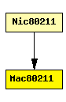

File: NetworkInterfaces/MF80211/macLayer/Mac80211.ned
C++ definition: click here
Implementation of the 802.11b MAC protocol. This module is intended to be used in combination with the SnrEval80211 and Decider80211 modules as physical layer.
This module supports ad-hoc mode only (does not generate or handle management frames), and does not support fragmentation, RTS threshold, duplication detection and recovery.
This component has been taken over from Mobility Framework 1.0a5.
The following diagram shows usage relationships between modules, networks and channels. Unresolved module (and channel) types are missing from the diagram. Click here to see the full picture.
If a module type shows up more than once, that means it has been defined in more than one NED file.
| Nic80211 | This NIC implements an 802.11 network interface card. |
| Name | Type | Description |
|---|---|---|
| address | string | MAC address as hex string (12 hex digits), or "auto". "auto" values will be replaced by a generated MAC address in init stage 0. |
| maxQueueSize | numeric const | |
| rtsCts | bool | |
| bitrate | numeric const | |
| broadcastBackoff | numeric const |
| Name | Direction | Description |
|---|---|---|
| uppergateIn | input | |
| uppergateOut | output | |
| lowergateIn | input | |
| lowergateOut | output |
simple Mac80211 parameters: address : string, // MAC address as hex string (12 hex digits), or // "auto". "auto" values will be replaced by // a generated MAC address in init stage 0. maxQueueSize: numeric const, rtsCts: bool, bitrate: numeric const, broadcastBackoff : numeric const; gates: in: uppergateIn; out: uppergateOut; in: lowergateIn; out: lowergateOut; endsimple